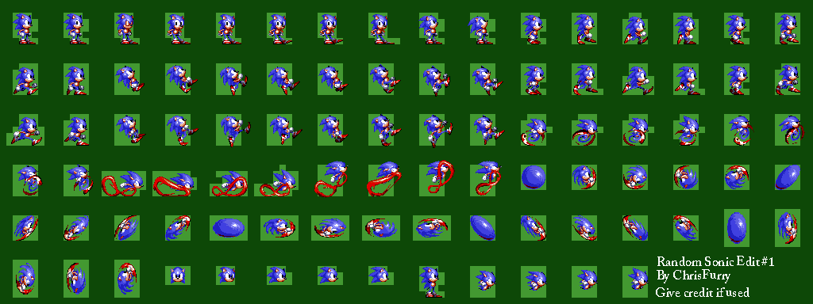
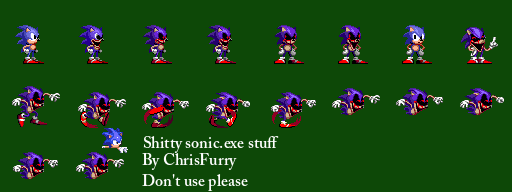
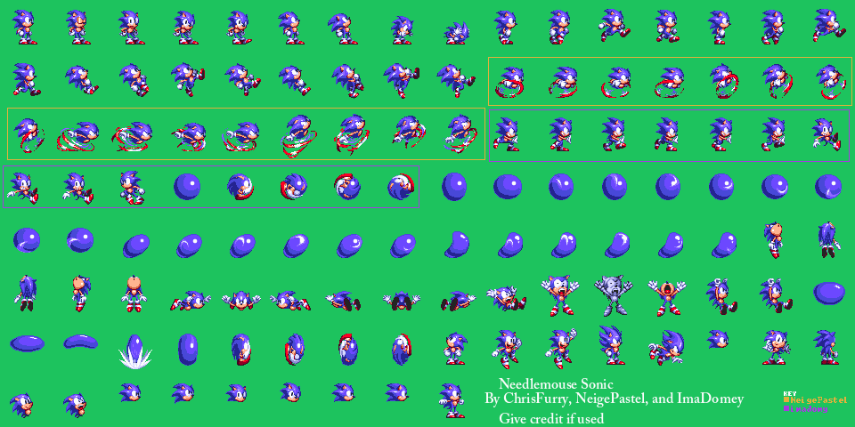

Sonic Museum: First Person Mini Sonic

Random Sonic Edits #1

Random Sonic.EXE shit #1

Needlemouse Sonic V1
For a framework that was gamemaker and bad, I was planning to use Sonic 1 sprites in Needlemouse Godot'd before that was silently canned.(use Sonic Worlds Next instead)

Sonic 3: Awesom Edit :) - INCOMPLETE
Want to contribute? Or just finished the sheet for me? Contact me on Discord and I'll update this page: chrisfurry